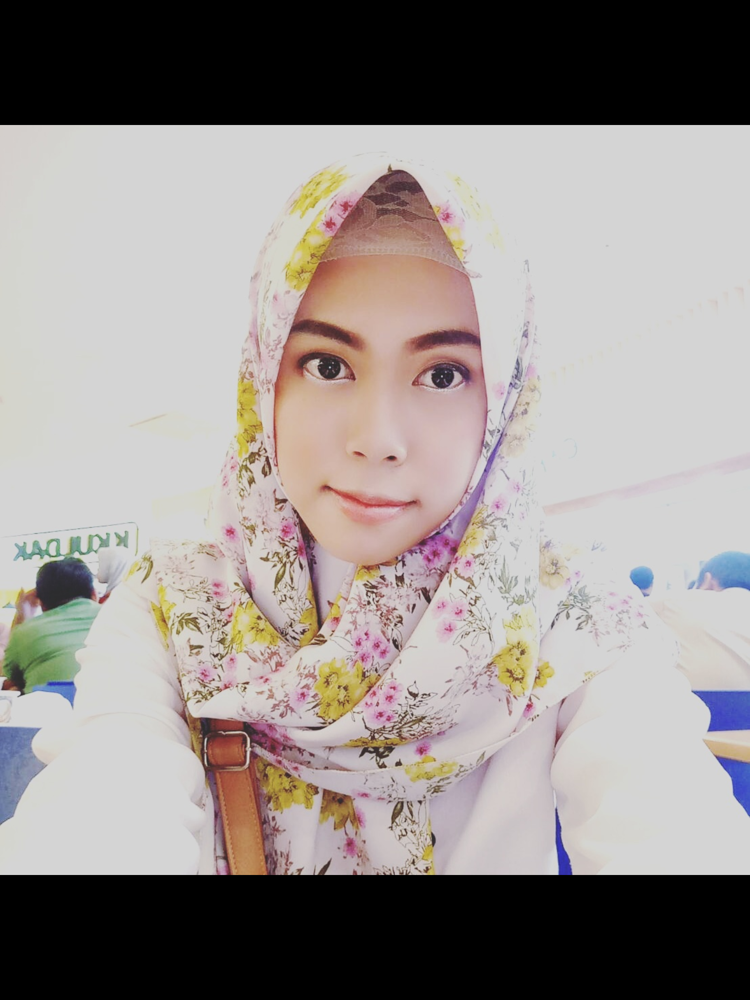

Bridging education and technology — building LMS platforms, institutional websites, and data-driven learning tools that make a real difference in Islamic schools across Indonesia.

Top Skills
EdTech · ML · Web Dev
About Me
I'm a dedicated educator and digital developer with nearly 3 years of experience teaching English and Biology at the Islamic Boarding School level. Alongside teaching, I build digital solutions — from LMS platforms and AI-powered apps to full institutional websites — for schools and foundations, often at no cost to empower communities that need it most.
Currently pursuing a Bachelor's in Educational Technology at Universitas Terbuka, while training in Data Science through Coding Camp powered by DBS Foundation.
What I Do
Building full learning management systems tailored for schools and pesantren using modern web tools.
Creating institutional websites for foundations & organizations — often pro bono for Islamic schools.
Machine learning, data analysis, and AI-powered prediction apps using Python, TensorFlow & FastAPI.
English & Biology teacher with a TPACK-informed approach, bringing EdTech into every classroom lesson.
Confident communicator across training sessions, workshops, and school community events.
Digital administration, NIY/NIS document generation, and scheduling systems for boarding schools.
Experience
Hands-on training in machine learning, data analysis, and AI application development. Built a full-stack AI job prediction app deployed to Vercel & Hugging Face Spaces.
Teaching English and Biology at the secondary level while simultaneously developing the school's digital infrastructure — from its official website to the Portal Digital Santri web app.
Managed operations for a corporate catering business — planning menus, overseeing staff, and building client relationships across East Java.
Education
Bachelor of Educational Technology
2023 — Present
Diploma — Culinary Arts & Chef Training
2020 — 2022
Machine Learning untuk Pemula — Dicoding
2025
Projects
Role-based web app for Darul Musthofa — parents, teachers & admins. Password-free login for non-technical users. Built with React & Node.js.
AI-powered job readiness prediction app (CC26-PSU078). TensorFlow model on Hugging Face, FastAPI backend, React+Vite frontend on Vercel.
Full institutional website for the boarding school — green & gold Islamic theme, hosted on GitHub Pages / Netlify. Built entirely pro bono.
Contact
Connect with me on these platforms